ü§î
Thorough introduction to #Java10's new `var` keyword. Where to use it and where not, how it works, and what it does to readability: https://t.co/Mc4CbiDvb4 pic.twitter.com/GY79ziLEH3
— Nicolai Parlog (@nipafx) November 16, 2017
0. Recap
“git” is not an acronym
A completely ignorant, childish person with no manners.
A distributed database

What's a commit?
$ git show commit deadbeef16165bb95a541321a7acf9cef9731c1d Author: Alexander Gro√ü <agross@therightstuff.de> Date: Sat Feb 6 12:41:24 2010 +0100 This is an awesome commit! Why, you ask? Let me explain how I… diff --git a/hello.txt b/hello.txt index afdb358..4b5fa63 100644 --- a/hello.txt +++ b/hello.txt @@ -1,3 +1,4 @@ -I love deleting code -I replaced this line +with this line, because it‚Äôs better + +This should have been here since forever
What's a commit?
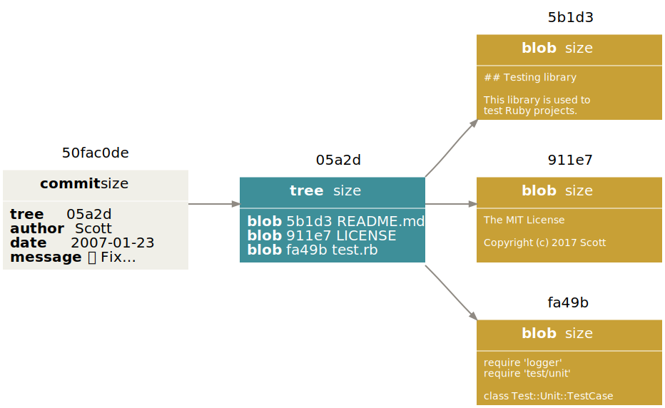History = Linked commits

What's a branch?

Here are some better alternative names for the "master" branch in your source code repository:
- bleeding-edge
- nevergreen
- works-on-my-machine
- happy-merging-XD
- there-be-real-users
- features-come-here-to-die- (L°O°)L_|_|_
— Markus Tacker üá≥üᥠ(@coderbyheart) March 6, 2018
The HEAD pointer

Creating a branch
$ git branch topic [<where>]
(
<where> defaults to
HEAD)
Current branch = where HEAD is
$ git checkout topic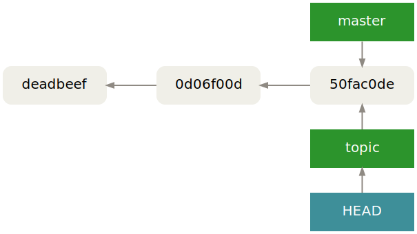
Rule #1
The only branch that can change is the current branch.
Rule #2
When HEAD's position changes your working copy will
be updated.
Uncommitted changes will be attempted to be preserved.
Pointers everywhere

Pointers everywhere

Pointers everywhere
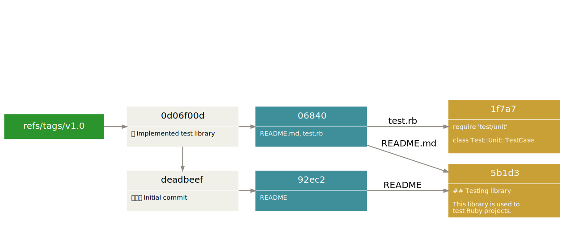Pointers everywhere
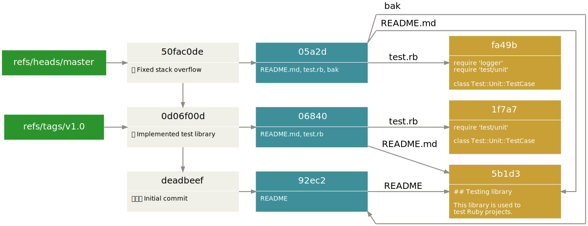1. Detached HEAD

Detached HEAD
$ git checkout deadbeef Note: checking out 'deadbeef'. You are in 'detached HEAD' state. You can look around, make experimental changes and commit them…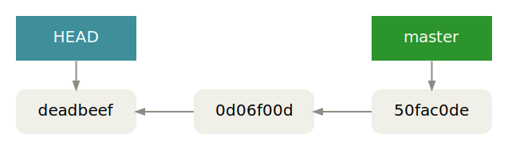
You're on no branch when you checkout a SHA, tag or
remote branch.
Restoring unreachable commits
$ git reflog
6bbd21d HEAD@{0}: commit (amend): JUG WIP
392bf47 HEAD@{1}: commit (amend): JUG WIP
e7d4298 HEAD@{2}: commit: JUG WIP
71ab831 HEAD@{3}: checkout: moving from gh-pages to jug
71ab831 HEAD@{4}: commit: Support more than one fade
76cd1b0 HEAD@{5}: commit: Tabs -> spaces
b6f3d91 HEAD@{6}: commit: Tune letter spacing for long git commands
cbc3b80 HEAD@{7}: commit: Fix creation of reproduction commit
2. The index
Content Lifecycle

Take-aways
-
Partial operations
$ git {add,reset HEAD,checkout} --patch -
Temporarily ignore changes to tracked files
$ git update-index --[no-]assume-unchanged
-
List ignored changes
$ git ls-files -v | grep '^h'
3. History rewriting
Modifying the last commit
$ git commit --amend -m 'C was bad'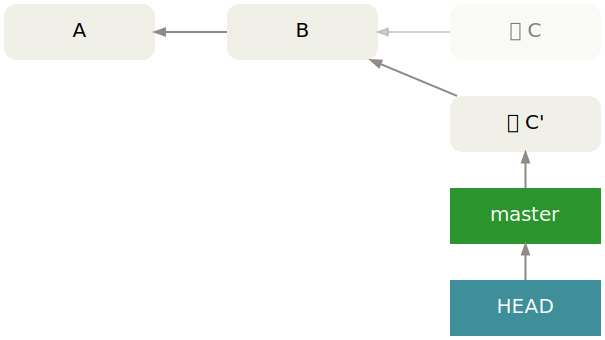
Undoing the last commit
$ git reset --hard HEAD~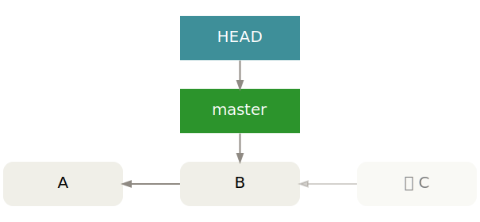
Rewriting the whole graph üí£
-
Extracting libraries from projects
$ git filter-branch --subdirectory-filter src/lib -- --all
-
Ensuring no internal files are published when a project is open-sourced
$ git filter-branch --index-filter 'git rm secret.txt' HEAD
-
Converting Subversion repositories with
svn:externals(there be üêâ)$ git svn-clone-externals svn://…
Rewriting parts of the graph
üîú
I'll tell my story after I heard yours
$ git checkout topic
$ git rebase master
Commit C and D is applied on top of master as C' and D'.
This is from a project I am working on. #git
#rebase vs. #merge
pic.twitter.com/TRgsq7BSin
—
MiCHΛΞl (@michaelhenke)
April 6, 2015
Complex Rebase
How to get rid of C when rebasing client on master?
Complex Rebase
$ git rebase --onto master server client

A Second Variant
$ git rebase --onto B server client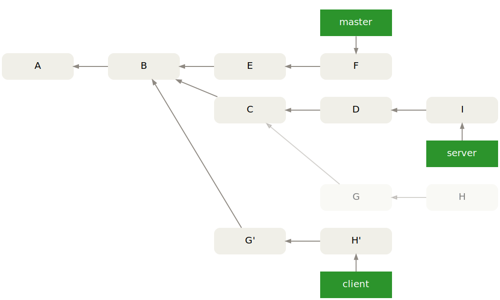
git rebase -i ;) pic.twitter.com/Qy2k7Q0EQJ
—
nixCraft (@nixcraft)
May 7, 2017
Preparing for code review
$ git rebase --interactive A
4. Integration strategies
Visualizing a "Git Merge" pic.twitter.com/RQJ2AV7JRQ
— David Rousset (@davrous) August 20, 2016
Diverged history

Recursive merge
$ git checkout master
$ git merge topic
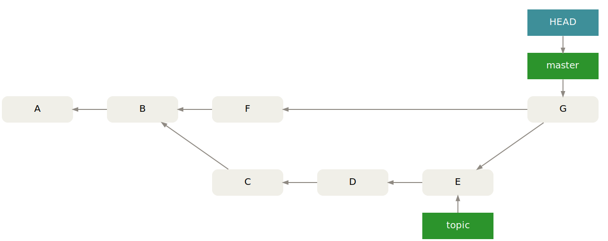
Recursive merge: Integrates two diverged branches.
Undoing the merge
$ git reset --hard E # Like a pro (covers recursive and ff merges): $ git reset --hard @@{1}
Linear history
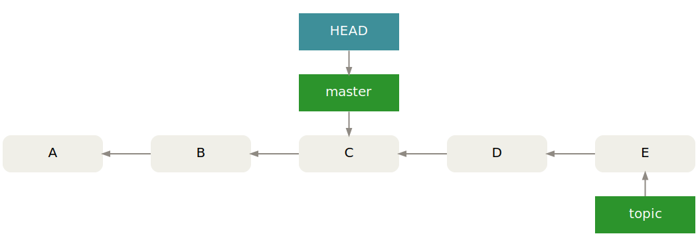Fast-forward merge
$ git checkout master
$ git merge topic

Fast-forward merge: The master pointer can be moved from C to E without losing commits reachable from master.
Squash merge üçã
$ git merge --squash [--commit] topic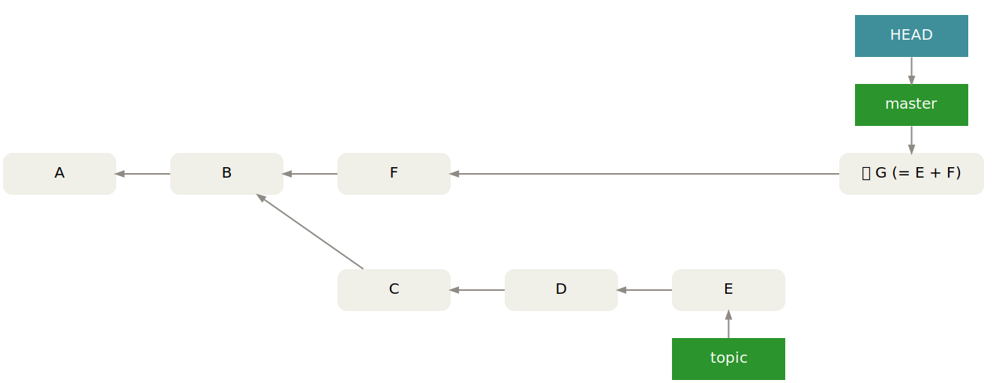
Apply commits from the topic branch combined as a single commit on top of HEAD.
Octopus merge üêô
$ git merge perf css report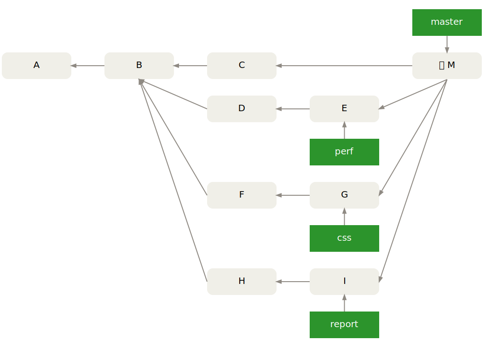
Integrate any number of non-conflicting branches with a single merge commit.
Cherry-pick üçí
$ git cherry-pick [--no-commit] D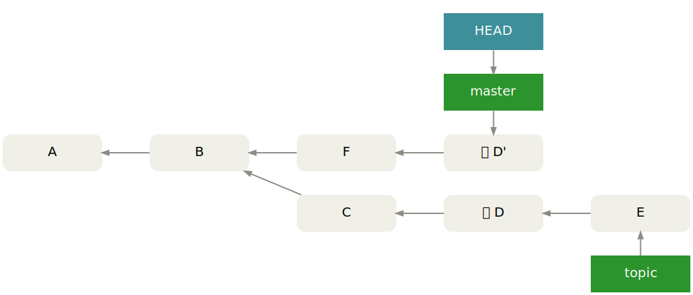
Apply a commit from somewhere else.
More options
-
Make
obsolete's commits reachable, but keep tree as-is
(i.e. archiveobsolete)$ git merge --strategy=ours obsolete
-
Craft merge commit with
release's tree
(i.e. no file-based merging)$ git commit-tree release^{tree} -m "Merge branch 'release'" -p HEAD -p release
Throw-Away Integration Branches
- Use temporary
pubranches - Do not base any work off of
pu - Enable “Reuse recorded resolution”
git config --global rerere.enabled true git config --global rerere.autoUpdate true
# All branches were tested in isolation

$ git checkout -b pu master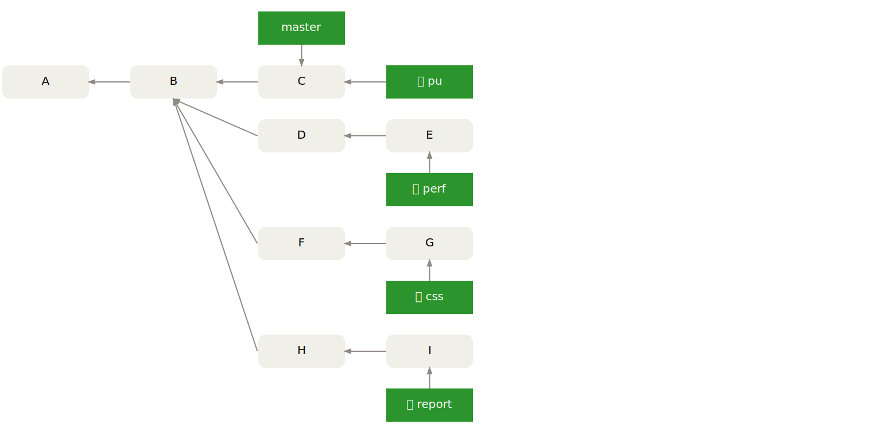
$ for b in perf css report; do git merge $b; done

$ git reset --hard master

$ for b in css report; do git merge $b; done
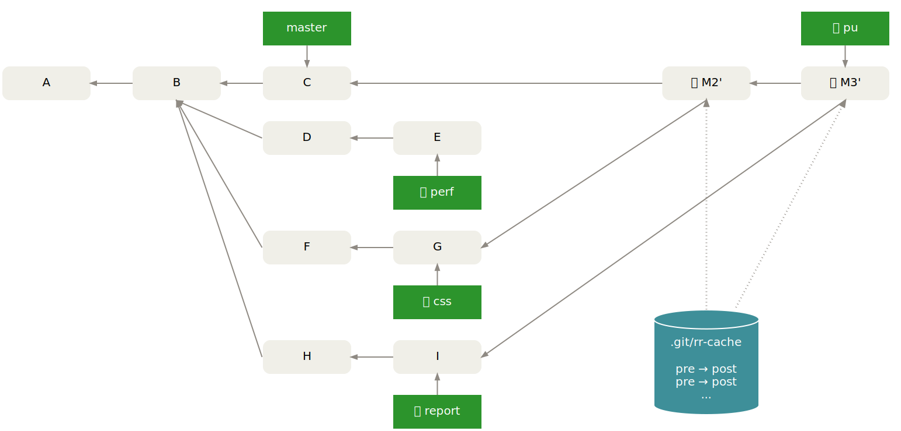
$ git checkout master; git merge pu; git branch -d pu

5. Remotes
Our 'Always amend commit and force push' model increased communication quality in our team a lot.
#GoldenCommit
@R0MMSEN
—
Marco Heimeshoff (@Heimeshoff)
July 13, 2017
Centralized

Integration Manager
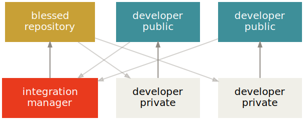Benevolent Dictator

Ad-hoc
Server (9418/tcp)
$ git daemon --base-path=. --export-all --verbose [4242] Ready to rumble
Client
$ git clone git://host/relative/path/to/repo/.git foo Cloning into 'foo'...
$ git remote add hans git://host/relative/path/to/repo/.git $ git fetch hans remote: Counting objects: 42, done. … From git://host/relative/path/to/repo/.git e3205a5..0282413 master -> hans/master
6. Bug searching
v1.0 works but v1.1 contains a regression
$ git stash push -m "whatever you're doing"

Start looking for the bug
$ git bisect start v1.1 v1.0

Test commit D
$ make test # => error
Give feedback about D
$ git bisect bad

Test commit B
$ make test # => success
Give feedback about B
$ git bisect good

Test commit C
$ make test # => success
Give feedback about C
$ git bisect good
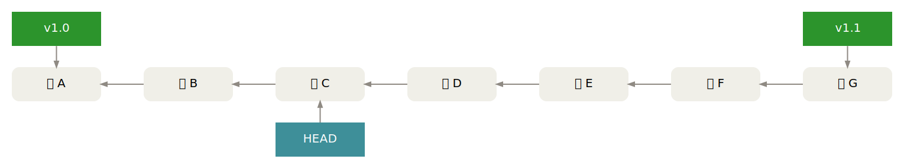
Culprit found!
# D is the first bad revision
Exit search
$ git bisect reset
Variant: bisect with cherry-pick
$ git checkout -b repro v1.1 && git commit -m 'repro'

Start looking for the bug
$ git bisect start v1.1 v1.0
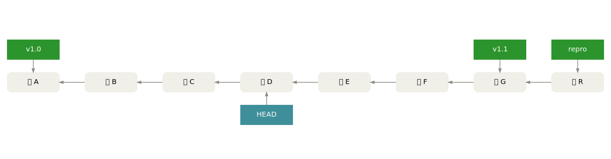
Apply repro commit
$ git cherry-pick repro

Test commit D + R'
$ make test # => error
Undo R'
$ git reset --hard HEAD~
Give feedback about D
$ git bisect bad

Repeat!
$ git cherry-pick repro

Bisecting
- Attempts to find bug-introducing commits by testing a minimum set of revisions
- Enters detached
HEADstate while searching - Automate testing
git bisect run <some-script>
some-scriptcan do things likecherry-picking reproductions, demo available- After the bad commit has been found, undo it
git revert [--no-commit] <bad-commit>
Thanks!
-
 Git Logo
by
Jason Long
is licensed under the
Creative Commons Attribution 3.0 Unported License
Git Logo
by
Jason Long
is licensed under the
Creative Commons Attribution 3.0 Unported License
-
 Git Comic
by
xkcd
is licensed under the
Creative Commons Attribution-NonCommercial 2.5 Generic License
Git Comic
by
xkcd
is licensed under the
Creative Commons Attribution-NonCommercial 2.5 Generic License
-
Portrait of the Emperor Marcus Aurelius
by Walters Art Museum
is licensed under
CC BY-SA 3.0 via Wikimedia Commons